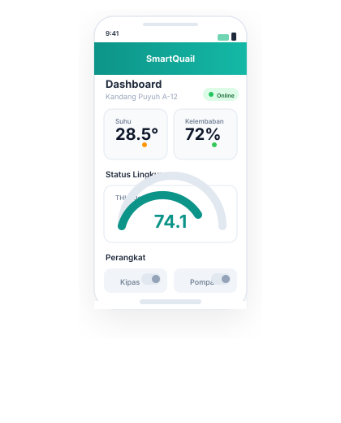

Pantau suhu, kelembaban, dan kualitas udara kandang puyuhmu secara real-time dari mana saja. Sistem monitoring berbasis ESP32 + Firebase + Flutter yang memberikan notifikasi dan kontrol otomatis.
ESP32 IoT Hardware
Firebase Realtime DB
SmartQuail Mobile App
Burung puyuh sangat sensitif terhadap perubahan lingkungan. Tanpa monitoring yang tepat, kerugian besar bisa terjadi dalam hitungan jam.
THI (Temperature Humidity Index) di atas 78 memicu heat stress — menyebabkan penurunan drastis produksi telur hingga kematian massal dalam 24 jam.
Peternak harus cek fisik kandang berkali-kali sehari — tidak efisien, melelahkan, dan tetap rentan terhadap human error saat malam atau cuaca ekstrem.
Tanpa sistem otomatis, tindakan korektif (menyalakan kipas, pompa air) sering terlambat — kandang sudah rusak saat peternak baru menyadari.
Sistem lengkap dari sensor hardware hingga dashboard mobile — dirancang khusus untuk kebutuhan peternakan puyuh modern.
Pantau suhu, kelembaban, THI index, dan kadar amonia (NH₃) secara langsung dari dashboard.
Nyalakan/matikan kipas, pompa air, dan trigger pakan otomatis — dari mana saja via aplikasi.
Data historis interaktif 1 jam hingga 30 hari — lengkap dengan statistik rata-rata & cooling events.
Notifikasi langsung saat kadar NH₃ melebihi ambang batas 50 ppm — lindungi kesehatan puyuh.
Kipas adaptif dengan kontrol kecepatan PWM — pendinginan otomatis sesuai suhu kandang.
Tersedia di Android, iOS, dan Web — satu akun, pantau kandang dari device apapun.
Alur data dari sensor di kandang hingga aksi kontrol — berjalan otomatis dalam hitungan detik.
DHT22 & MQ-135 mendeteksi suhu, kelembaban, dan amonia di kandang setiap 2 detik.
ESP32 mengirim data via WiFi ke Firebase Realtime Database — update real-time.
Aplikasi Flutter menampilkan data via stream — grafik, THI gauge, dan status perangkat.
Kipas/pompa aktif otomatis atau user kontrol manual — perintah langsung ke ESP32.
ESP32
Mikrokontroler IoT
Firebase
Realtime Database
/sensor_data
← ESP32
/controls
↔ App ↔ ESP32
/history
← ESP32
SmartQuail
Flutter Mobile
Tampilan aplikasi mobile yang intuitif — monitoring kandang dalam satu layar.

Suhu, Kelembaban, THI Index, Amonia — indikator warna (hijau/kuning/merah) sesuai kondisi.
Gauge semi-circular dengan animasi real-time — tampilkan status Normal, Warning, atau Danger.
Toggle ON/OFF kipas & pompa langsung dari dashboard — lihat status relay secara real-time.
Status koneksi hardware langsung terdeteksi — tahu kapan kandang offline/perlu pengecekan.
SmartQuail dirancang dengan riset mendalam — menggabungkan IoT, cloud, dan mobile untuk hasil optimal.
Akurasi Sensor Suhu
Update Data Real-time
Jadwal Pakan Otomatis/Hari
THI Batas Bahaya Terpantau
Proyek riset BINUS University — dikembangkan oleh mahasiswa dengan bimbingan profesor berpengalaman.
Mobile Developer (Flutter)
Bertanggung jawab atas pengembangan aplikasi mobile, desain UI/UX, integrasi Firebase, dan arsitektur sistem cloud.
Di bawah bimbingan Prof. Dr. Ir. Widodo Budiharto
BINUS University, Jakarta — 2026